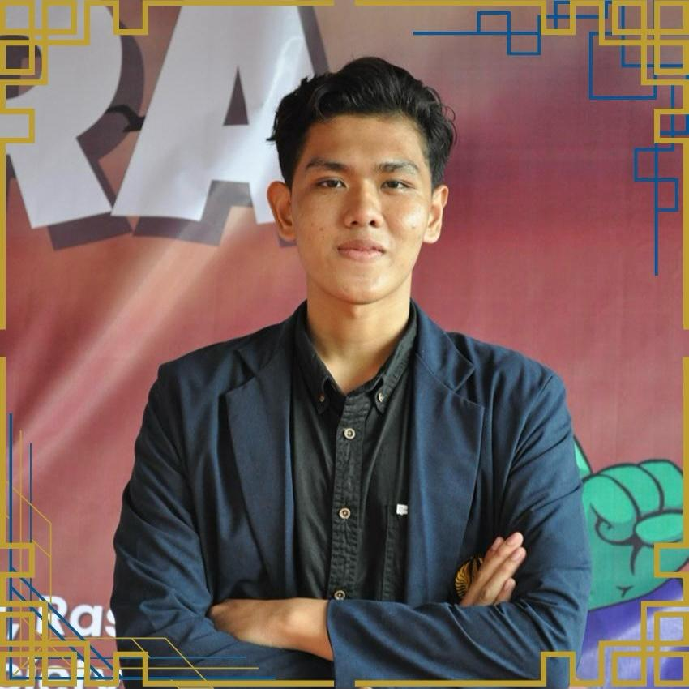
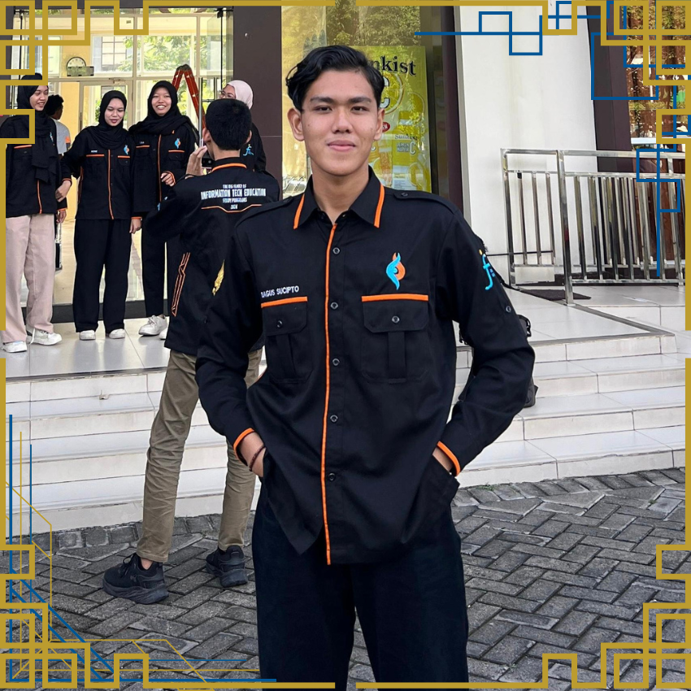
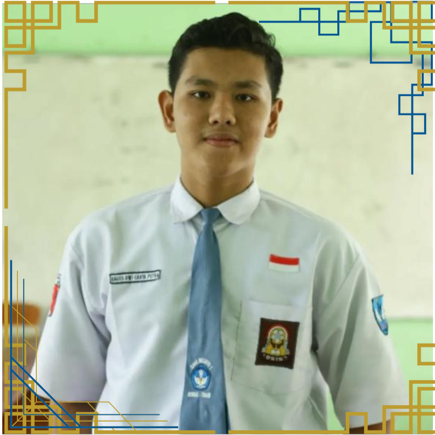
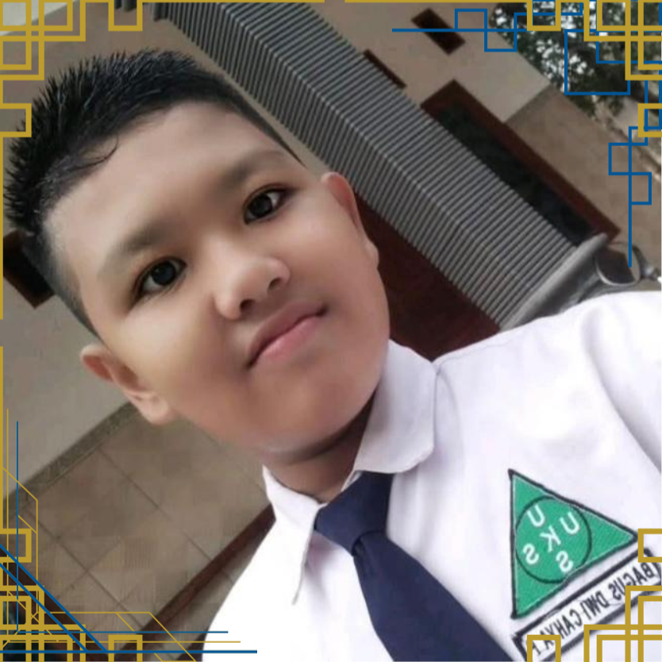
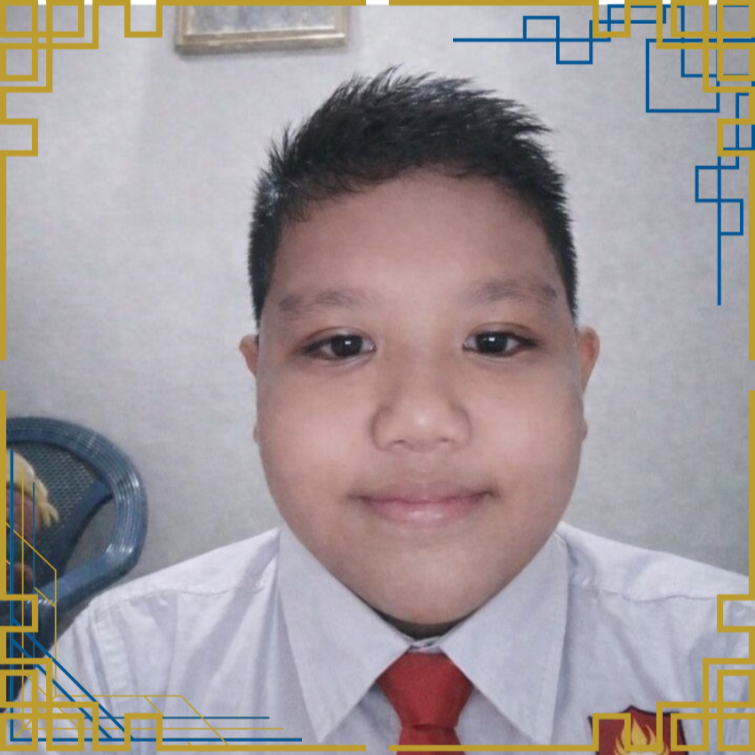
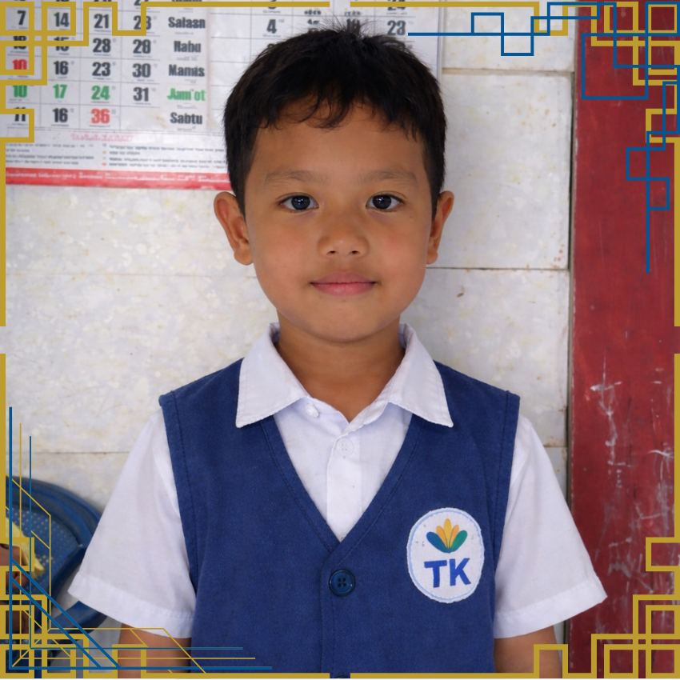

Menempuh studi Pendidikan Teknologi Informasi dengan fokus pada pengembangan sistem digital serta integrasi teknologi dalam praktik pendidikan. Fase ini menjadi ruang pendalaman intelektual sekaligus penguatan kepemimpinan melalui keterlibatan dalam organisasi dan penelitian yang berorientasi pada kebermanfaatan.

Memperkuat landasan akademik serta membangun kedewasaan berpikir melalui partisipasi aktif dalam kegiatan sekolah. Periode ini menjadi tahap transisi penting dalam membentuk disiplin, tanggung jawab, dan kesiapan menuju pendidikan tinggi.

Mengembangkan fondasi akademik dan karakter melalui proses pembelajaran yang menekankan kedisiplinan, kerja sama, serta adaptasi dalam lingkungan pendidikan yang dinamis.

Tahap pembentukan dasar literasi, numerasi, dan karakter sebagai fondasi awal perjalanan intelektual.

Fase pengenalan terhadap lingkungan pendidikan formal yang menumbuhkan rasa ingin tahu dan kesiapan belajar sebagai bagian dari proses perkembangan awal.